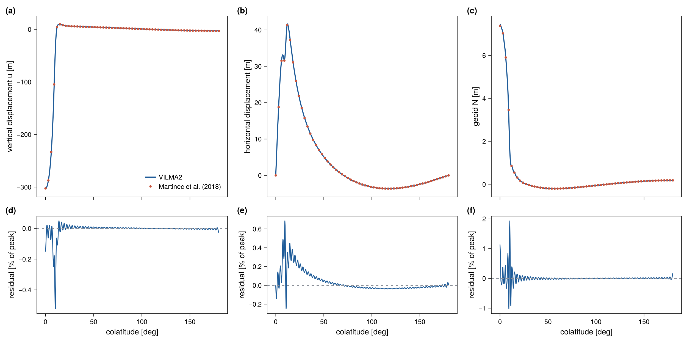
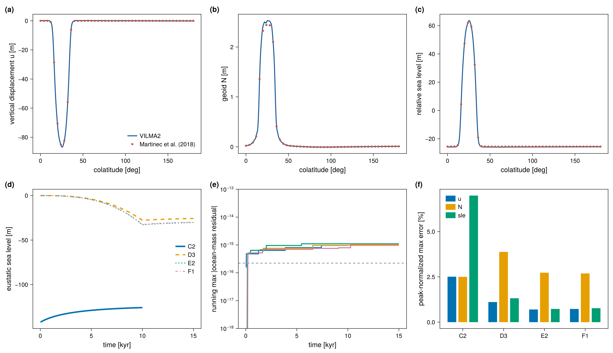
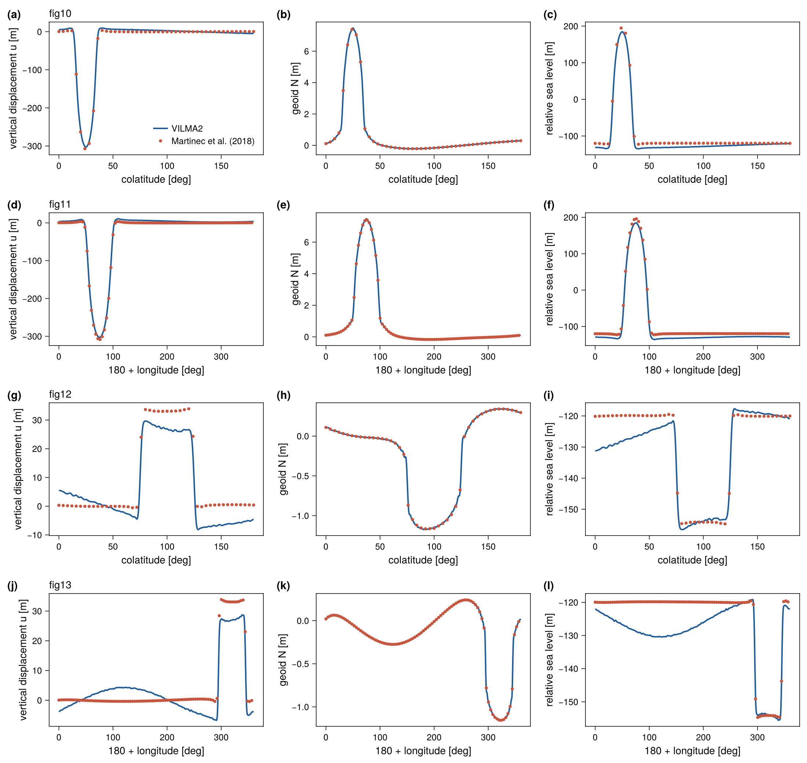
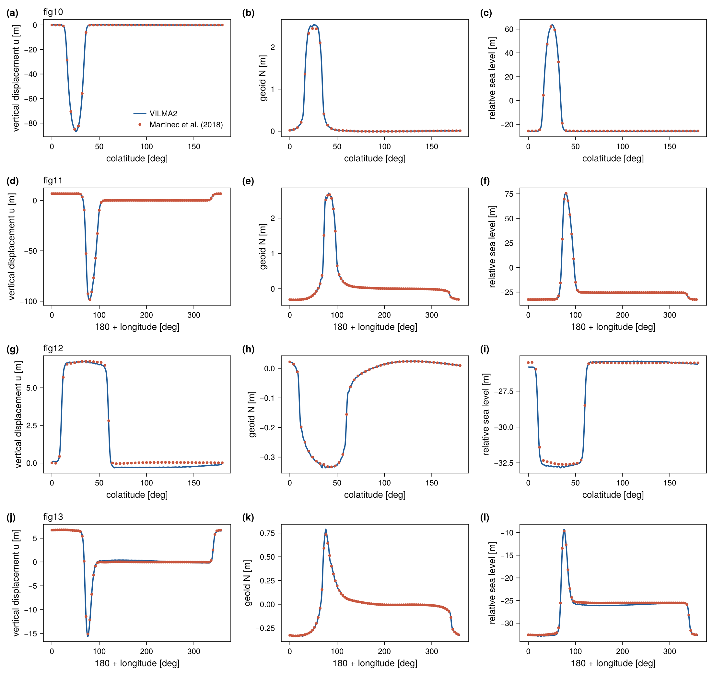
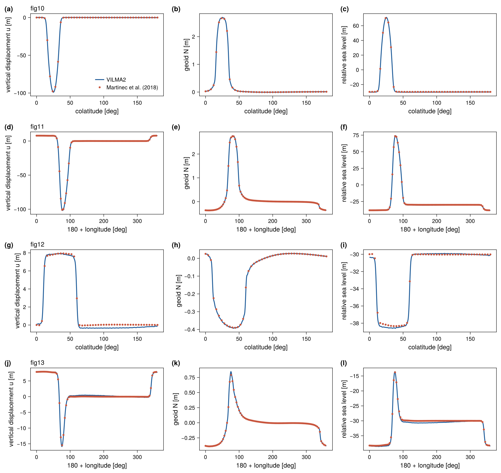
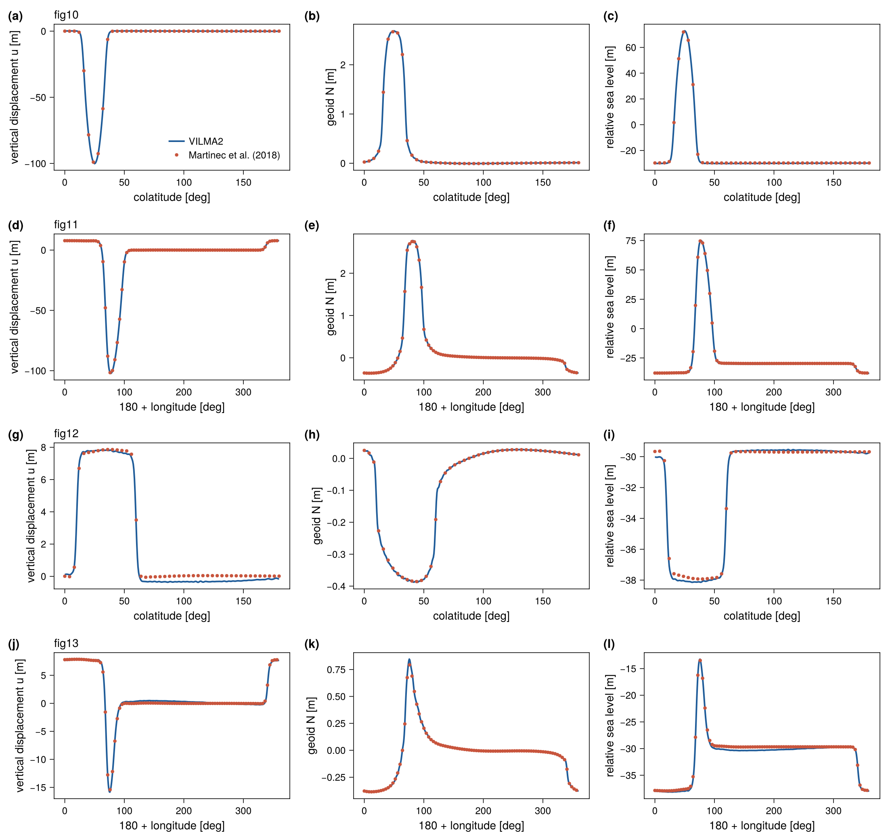

Benchmark: the sea-level equation
This benchmark runs the full self-consistent, migrating-coastline sea-level equation driven by the viscoelastic response. It is the benchmark in which VILMA1 took part. It exercises the ocean function, mass conservation, coastline migration, grounded-ice flotation, and the sub-grid sloping coast all together.
Benchmark structure
The authority for the case definitions is Martinec et al. (2018), Table 4 (not the differing case labels in third-party reimplementations). The paper defines five cases from a small set of building blocks:
- Ice (square-root cap \(h(\psi) = h_0\sqrt{(\cos\psi-\cos\alpha)/(1-\cos\alpha)}\), \(\alpha=10°\)): L0 pole/1500 m; L1 colat 25°/lon 75°, 1500 m; L2 same centre, 500 m.
- Basin (\(\zeta^{(0)} = b_{\max} - b_0\,e^{-\psi^2/2\sigma^2}\), \(\sigma=26°\)): B0 none; B1 colat 100°/lon 320°, shallow (760/1200); B2 colat 35°/lon 25°, deep (3800/6000, 2200 m at centre).
- Time: T0 Heaviside (load held, \(t_f = 10\) kyr); T1 linear growth over 10 kyr then held to 15 kyr.
- Ocean: SLE0 none; SLE1 fixed geometry \(O^{(0)}\); SLE2 time-varying (migrating coastline).
- Densities \(\rho_{\text{ice}}/\rho_{\text{water}} = 931/1000\ \mathrm{kg\,m^{-3}}\), \(g_0 = 9.815\ \mathrm{m\,s^{-2}}\).
The vendored SBK reference files use a labelling offset by one letter from the paper (SBK letter = paper letter + 1):
| SBK | paper | ocean | ice | time | basin |
|---|---|---|---|---|---|
| A | A | SLE0 (none) | L0 (1500 m) | T0 | B0 (none) |
| C2 | B | SLE1 fixed | L1 (1500 m) | T0 | B1 (shallow) |
| D3 | C | SLE1 fixed | L2 (500 m) | T1 | B2 (deep) |
| E2 | D | SLE2 migrate | L2 (500 m) | T1 | B2 (deep) |
| F1 | E | SLE2 migrate | L2 (500 m) | T1 | B2* (paleo-topo prescribed) |
Error measure
Every number on this page is a peak-normalized maximum error: the largest absolute difference between model and reference along one profile, divided by the largest absolute value of the reference along that same profile. The two horizontal components are normalized by the peak magnitude of the horizontal vector, since a profile through a symmetry axis nulls one component. This measure is strict in one respect and misleading in another. It reports the single worst point of a profile. It also grows without any change in the absolute error when a profile crosses a region where the field itself is small. Both effects appear in case C2.
Case A — pure viscoelastic loading
The simplest case is a spherical cap applied as a Heaviside load and relaxed for 10 kyr, with no ocean and with degrees 0 and 1 dropped. test_benchmark_martinec compares the profiles of fig. 10 of Martinec et al. (2018).
| Field | Peak | Tolerance | Measured |
|---|---|---|---|
| uplift | 302.6 m | 1.5 % | 0.52 % |
| horizontal displacement | 41.4 m | 1.5 % | 0.69 % |
| geoid | 7.4 m | 3 % | 1.94 % |
This is the first benchmark of the horizontal displacement and confirms the spheroidal \(V\) field.

SLE cases — C2, D3, E2, F1
These cases run the full sea-level equation with the time-varying load at \(\ell_\max = 128\) with a 20 yr step. The reference files give seven columns: longitude or colatitude, vertical displacement, the two horizontal components, the gravitational potential increment, the sea-surface variation, and the SLE result (relative sea level). They are sampled along four profiles per case (figs. 10–13 of the paper). Figs. 10 and 11 pass through the ice cap, along a meridian and a parallel. Figs. 12 and 13 pass through the ocean basin.
Mass is conserved to \(\sim 10^{-16}\) (relative) per step in every case. Three settings control the agreement:
- Fixed or migrating ocean. C2 and D3 are fixed-ocean (SLE1) cases. Running them with a migrating coastline drains the basin roughly twice too far, so the fixed-ocean mode (
sle_fixed_ocean) must be honored. - Grounded-ice masking. The ice load applies only over grounded ice. Floating ice over the deep basin is carried by the ocean term.
- The sub-grid sloping coast (
sle_subgrid). The SBK reference uses a sub-grid coast. With a binary coastline the local errors of E2 near the grounding line were 14–42 % during development (not re-measured for this page;test_benchmark_sle.x E2 binaryruns that variant). With the sub-grid water-column load they are about 1 %.
Measured errors
The table gives the peak-normalized maximum error [%] of every profile and field (model 1790f86, ifx, albedo, make check-slow).
| Case | Profile | \(u\) | \(v_\theta\) | \(v_\varphi\) | \(N\) | sea surface | rsl |
|---|---|---|---|---|---|---|---|
| C2 | fig. 10 | 2.51 | 14.29 | 9.12 | 2.50 | 4.96 | 6.99 |
| C2 | fig. 11 | 2.47 | 15.00 | 11.77 | 1.34 | 5.01 | 6.93 |
| C2 | fig. 12 | 23.10 | 27.73 | 7.20 | 7.16 | 4.95 | 7.16 |
| C2 | fig. 13 | 21.42 | 25.73 | 24.34 | 5.41 | 4.92 | 6.85 |
| D3 | fig. 10 | 1.11 | 1.64 | 6.04 | 3.88 | 0.92 | 1.32 |
| D3 | fig. 11 | 0.72 | 3.42 | 4.03 | 5.42 | 1.23 | 1.07 |
| D3 | fig. 12 | 5.12 | 4.73 | 5.04 | 5.33 | 0.89 | 1.70 |
| D3 | fig. 13 | 3.31 | 4.21 | 4.44 | 6.98 | 0.93 | 1.80 |
| E2 | fig. 10 | 0.70 | 3.86 | 7.57 | 2.73 | 0.92 | 0.73 |
| E2 | fig. 11 | 0.38 | 3.33 | 5.25 | 1.46 | 0.93 | 0.87 |
| E2 | fig. 12 | 5.00 | 5.02 | 4.93 | 4.79 | 0.93 | 1.30 |
| E2 | fig. 13 | 2.83 | 3.93 | 5.04 | 6.97 | 0.94 | 1.83 |
| F1 | fig. 10 | 0.73 | 3.56 | 7.02 | 2.69 | 0.88 | 0.77 |
| F1 | fig. 11 | 0.37 | 3.35 | 5.11 | 1.51 | 0.89 | 0.82 |
| F1 | fig. 12 | 6.38 | 4.92 | 4.93 | 5.28 | 0.87 | 1.42 |
| F1 | fig. 13 | 2.83 | 3.96 | 4.95 | 6.78 | 0.90 | 1.80 |
| tolerance | 30 | 35 | 35 | 12 | 8 | 12 |
The final uniform sea-level shift of the model is \(-125.83\) m (C2), \(-25.74\) m (D3), \(-30.28\) m (E2) and \(-29.93\) m (F1).
What the numbers mean
Cases D3, E2 and F1. The sea surface and relative sea level agree with the reference to within 2 % of the peak in all twelve profiles, which is 0.2–0.8 m in absolute terms. The uplift through the ice cap agrees to about 1 % (0.4–1.0 m of 86–102 m). The percentages of 5–7.6 % belong to fields with a small peak along the profile: the uplift along the basin profiles (0.35–0.5 m of 7–15 m), the horizontal displacement (0.4–0.8 m of 7–15 m) and the geoid (0.02–0.14 m of 0.3–2.7 m). The absolute differences are thus below 1 m everywhere in these three cases.
Case C2. The differences are larger, and the percentages of 21–28 % are not a local effect at the migrating coastline (the ocean of C2 is fixed). Two smooth, large-scale differences explain them. First, the sea surface of the model lies 5.9 m below the reference at every point of all four profiles, which is 4.9 % of the 120 m sea-level fall of this case. Second, the uplift differs from the reference by a smooth pattern of global extent with an amplitude of about 7 m. It is positive on the side of the ice cap and negative on the far side, which is the shape of a degree-1 term. The absolute uplift difference is therefore about the same in all four profiles (7.3–7.8 m). It is 2.5 % of the 309 m peak along the profiles through the ice cap, and 21–23 % of the 34 m peak along the two profiles through the basin. The horizontal differences of 6–7 m behave in the same way. Case C2 has the thickest ice (1500 m, three times that of the other cases) applied as a Heaviside load on a fixed ocean, so a difference in the degree-0 and degree-1 treatment between the two codes is largest here. The same pattern is present in E2 with an amplitude of about 0.3 m. The origin of this difference (reference frame, or the mass budget of the fixed ocean) has not been attributed. The tolerances of the test (30 % and 35 %) are set to pass this case and are therefore not a meaningful bound for the other three.
The SBK reference is the output of one code (giapy), not a closed-form solution. Martinec et al. (2018) document a scatter of a few percent between the participating codes. The agreement of D3, E2 and F1 is within that scatter. The uniform offset and the degree-1 pattern of C2 are larger than that and remain open.
Figures





With VILMA_BENCH_DUMP set, test_benchmark_sle writes the model and reference values of every profile (sle_<case>_<fig>_profile.txt) and the time history of each run (sle_<case>_history.txt); see Benchmarks.
Provenance
Reference: data/benchmarks/sle_martinec2018/*_SBK.dat, from the giapy package (tests/sbk_benchmark_data.tar.gz, MIT), originating in the Martinec et al. (2018) intercomparison. The case ↔︎ paper mapping and column definitions are in data/benchmarks/PROVENANCE.md.